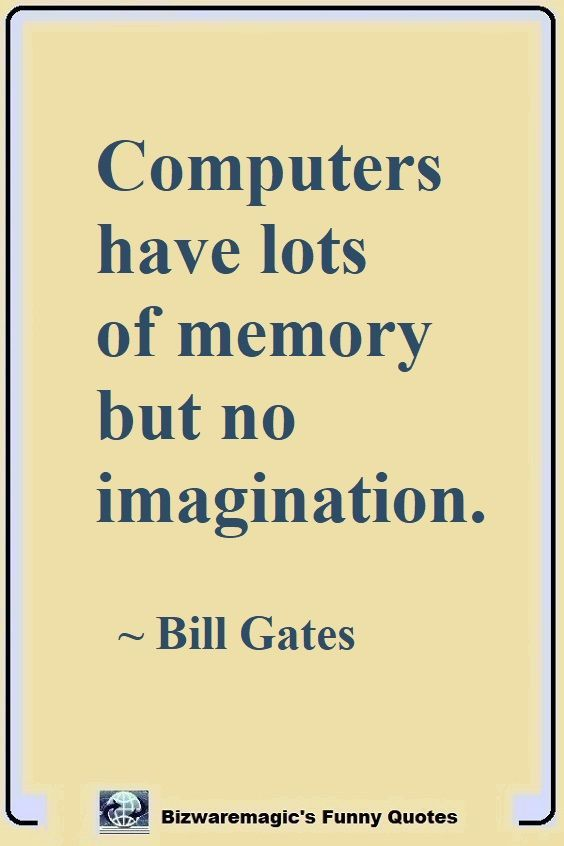

In the Beginning...
The history of computers starts out about 2000 years ago, with the birth of the abacus. When the beads on the abacus are moved around, according to programming rules memorized by the user, all regular arithmetic problems can be done. In 1671, Gottfried Wilhelm von Leibniz invented a computer that was built in 1694. It could add, and, after changing some things around, multiply. About a century later Thomas of Colmar created the first successful mechanical calculator that could add, subtract, multiply, and divide.
Events that impacted society in a memorable
way!Other Memorable Events...


- In 1812, Babbage realized that many long calculations were really a series of predictable actions that were constantly repeated. He began to design an automatic mechanical calculating machine, which he called a difference engine.
- Herman Hollerith and James Powers made a step towards automated computing with the development of punched cards. Reading errors were reduced dramatically, workflow increased, and stacks of punched cards could be used as memory of almost unlimited size. For more than 50 years, punched card machines did most of the world's first business computing.
- The start of World War II produced a large need for computer capacity. In 1942, John P. Eckert and John W. Mauchly decided to build a high - speed electronic computer to do the job. Known as ENIAC, this machine could multiply two numbers at a rate of 300 per second.
- Early in the 50's two important engineering discoveries changed the image of the computer field - Magnetic Core Memory and Transistor - Circuit Elements. These technical discoveries quickly found their way into computers. Such computers were mostly found in large computer centers operated by industry, government, and private laboratories.
- In the 1960's, efforts to design and develop the fastest possible computer with the greatest capacity reached a turning point with the Stretch computer by IBM. Stretch was made with the fastest access time, and total capacity in the vicinity of 100,000,000 words.
- Many companies, some new to the computer field, introduced programmable minicomputer supplied with software packages in the 1970’s. The "shrinking" trend continued with the introduction of personal computers (PC's), which are programmable machines small enough and inexpensive enough to be purchased and used by individuals. Many companies, such as Apple Computer and Radio Shack introduced very successful PCs in the 1970’s.
- By the late 1980’s, some personal computers were run by microprocessors that, handling 32 bits of data at a time, could process about 4,000,000 instructions per second.
- Computer networking, e-mail and the Internet, and electronic publishing are just a few of the applications that have grown in recent years. Computers continue to decrease in price, offering the promise that soon, “computers will reside in most homes, offices, and schools”.
Memorable quotes by fascinating
people!Great Computer Quotes...

“Men are from Mars, Women are from Venus, Computers are from Hell.”
~Author Unknown
“Give a person a fish and you feed them for a day;
teach that person to use the Internet and they won't bother you for weeks.”
~Author Unknown
“To err is human, but to really foul things up requires a computer.”
~Farmer's Almanac, 1972
Creating HTML Tables with HTML is super
easy!Creating tables with HTML...

Creating tables with HTML is fairly straight forward, utilizing the "table" tag. By utilizing "th" tags as headers and using "tr" tags to indicate table rows. It's possible to create data tables for statisticians or for your everyday pro/con list.
| Person | Place | Thing |
|---|---|---|
| Austin | Florida | Vehicle |
| John | Newfoundland | Ski-doo |
Creating Tooltips in CSS is fun and
easy!Creating Tooltips in CSS...
Tooltips are way to provide additional information about an element when the user moves the pointer over it. It makes use of the visibility, z-index and hover attributes. There are plenty of cusomizations available for the Tooltip element.